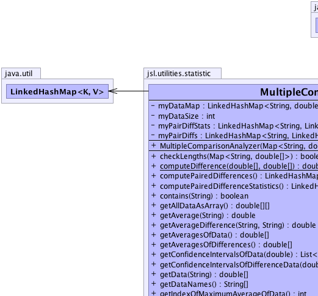

jsl.utilities.statistic.MultipleComparisonAnalyzer
jsl.utilities.statistic.MultipleComparisonAnalyzer
|
||||||||||
| PREV CLASS NEXT CLASS | FRAMES NO FRAMES | |||||||||
| SUMMARY: NESTED | FIELD | CONSTR | METHOD | DETAIL: FIELD | CONSTR | METHOD | |||||||||
java.lang.Object
public class MultipleComparisonAnalyzer
Holds data to perform multiple comparisons Performs pairwise comparisons and computes pairwise differences and variances
|  | |
| Field Summary | |
|---|---|
private java.util.LinkedHashMap<java.lang.String,double[]> |
myDataMap
|
private int |
myDataSize
|
private java.util.LinkedHashMap<java.lang.String,java.util.LinkedHashMap<java.lang.String,double[]>> |
myPairDiffs
|
private java.util.LinkedHashMap<java.lang.String,java.util.LinkedHashMap<java.lang.String,Statistic>> |
myPairDiffStats
|
| Constructor Summary | |
|---|---|
MultipleComparisonAnalyzer(java.util.Map<java.lang.String,double[]> dataMap)
|
|
| Method Summary | |
|---|---|
boolean |
checkLengths(java.util.Map<java.lang.String,double[]> dataMap)
Checks if each double[] in the map has the same length |
static double[] |
computeDifference(double[] f,
double[] s)
A helper method to compute the difference between the two arrays |
java.util.LinkedHashMap<java.lang.String,java.util.LinkedHashMap<java.lang.String,double[]>> |
computePairedDifferences()
The key to each LinkedHashMap is the name of the data The array contains the paired differences |
java.util.LinkedHashMap<java.lang.String,java.util.LinkedHashMap<java.lang.String,Statistic>> |
computePairedDifferenceStatistics()
The key to each LinkedHashMap is the name of the data The Statistic is based on the paired differences |
boolean |
contains(java.lang.String dataName)
Returns true if the analyzer has data for the name |
double[][] |
getAllDataAsArray()
A 2-Dim array of the data each row represents the across replication average for each configuration (column) |
double |
getAverage(java.lang.String name)
The average for the named data or Double.NaN if the name is not in the collector |
double |
getAverageDifference(java.lang.String s1,
java.lang.String s2)
The average for the pair of data names given by the strings. |
double[] |
getAveragesOfData()
An array of all the averages of the data |
double[] |
getAveragesOfDifferences()
Suppose there are n data names. |
java.util.List<Interval> |
getConfidenceIntervalsOfData(double level)
A list of confidence intervals for the data based on the supplied confidence level |
java.util.List<Interval> |
getConfidenceIntervalsOfDifferenceData(double alpha)
Suppose there are n data names. |
double[] |
getData(java.lang.String name)
The data associated with the name. |
java.lang.String[] |
getDataNames()
The names of items being compared as an array of strings |
int |
getIndexOfMaximumAverageOfData()
The index of the maximum average |
int |
getIndexOfMaximumOfAveragesOfDifferences()
Suppose there are n data names. |
int |
getIndexOfMinimumAverageOfData()
The index of the minimum of the average of all the data |
int |
getIndexOfMinimumOfAveragesOfDifferences()
The actual minimum average of the differences |
double |
getMaximumAverageOfData()
The maximum of the average of all the data |
double |
getMaximumOfAveragesOfDifferences()
The actual maximum average of the differences |
double |
getMaxVarianceOfDifferences()
The maximum variance of the differences |
double |
getMinimumAverageOfData()
The minimum of the average of all the data |
double |
getMinimumOfAveragesOfDifferences()
|
java.lang.String |
getNameOfMaximumAverageOfData()
The name of the maximum average |
java.lang.String |
getNameOfMaximumAverageOfDifferences()
The name of the maximum average difference |
java.lang.String |
getNameOfMinimumAverageOfData()
The name of the minimum of the average of all the data |
java.lang.String |
getNameOfMinumumAverageOfDifferences()
The name of the minimum average difference |
java.lang.String[] |
getNamesOfPairedDifferences()
Each paired difference is labeled with data name i - data name j for all i, j The returns the names as an array of strings |
double[] |
getPairedDifference(java.lang.String s1,
java.lang.String s2)
The paired differences as a array for the pair of data names given by the strings. |
Statistic |
getPairedDifferenceStatistic(java.lang.String s1,
java.lang.String s2)
The statistics for the pair of data names given by the strings. |
java.util.List<Statistic> |
getPairedDifferenceStatistics()
A list holding the statistics for all of the pairwise differences is returned |
Statistic |
getStatistic(java.lang.String name)
Get statistics on the data associated with the name. |
java.util.List<Statistic> |
getStatistics()
A list of statistics for all the data |
double |
getVariance(java.lang.String name)
The variance for the named data or Double.NaN if the name is not in the collector |
double |
getVarianceOfDifference(java.lang.String s1,
java.lang.String s2)
The variance for the pair of data names given by the strings. |
double[] |
getVariancesOfData()
An array of all the variances of the data |
double[] |
getVariancesOfDifferences()
Suppose there are n data names. |
static void |
main(java.lang.String[] args)
|
void |
setDataMap(java.util.Map<java.lang.String,double[]> dataMap)
Sets the underlying data map. |
void |
writeDataAsCSVFile(java.io.PrintWriter out)
Write the data as a csv file |
void |
writeSummaryDifferenceStatistics(java.io.PrintWriter out)
Write a statistical summary of the difference data in the analyzer |
void |
writeSummaryStatistics(java.io.PrintWriter out)
Write a statistical summary of the data in the analyzer |
| Methods inherited from class java.lang.Object |
|---|
clone, equals, finalize, getClass, hashCode, notify, notifyAll, toString, wait, wait, wait |
| Field Detail |
|---|
private java.util.LinkedHashMap<java.lang.String,double[]> myDataMap
private int myDataSize
private java.util.LinkedHashMap<java.lang.String,java.util.LinkedHashMap<java.lang.String,double[]>> myPairDiffs
private java.util.LinkedHashMap<java.lang.String,java.util.LinkedHashMap<java.lang.String,Statistic>> myPairDiffStats
| Constructor Detail |
|---|
public MultipleComparisonAnalyzer(java.util.Map<java.lang.String,double[]> dataMap)
| Method Detail |
|---|
public java.lang.String[] getDataNames()
public boolean contains(java.lang.String dataName)
dataName -
public final void setDataMap(java.util.Map<java.lang.String,double[]> dataMap)
dataMap - public java.util.LinkedHashMap<java.lang.String,java.util.LinkedHashMap<java.lang.String,Statistic>> computePairedDifferenceStatistics()
public java.util.LinkedHashMap<java.lang.String,java.util.LinkedHashMap<java.lang.String,double[]>> computePairedDifferences()
public double[] getPairedDifference(java.lang.String s1,
java.lang.String s2)
s1 - s2 -
public java.util.List<Statistic> getPairedDifferenceStatistics()
public Statistic getPairedDifferenceStatistic(java.lang.String s1,
java.lang.String s2)
s1 - s2 -
public java.lang.String[] getNamesOfPairedDifferences()
public java.lang.String getNameOfMaximumAverageOfDifferences()
public java.lang.String getNameOfMinumumAverageOfDifferences()
public double getMaximumOfAveragesOfDifferences()
public int getIndexOfMaximumOfAveragesOfDifferences()
public double getMinimumOfAveragesOfDifferences()
public int getIndexOfMinimumOfAveragesOfDifferences()
public double[] getAveragesOfDifferences()
public double[] getVariancesOfDifferences()
public java.util.List<Interval> getConfidenceIntervalsOfDifferenceData(double alpha)
public double getMaxVarianceOfDifferences()
public double getAverageDifference(java.lang.String s1,
java.lang.String s2)
s1 - s2 -
public double getVarianceOfDifference(java.lang.String s1,
java.lang.String s2)
s1 - s2 -
public static double[] computeDifference(double[] f,
double[] s)
f - s -
public final boolean checkLengths(java.util.Map<java.lang.String,double[]> dataMap)
dataMap -
public Statistic getStatistic(java.lang.String name)
name -
public java.util.List<Statistic> getStatistics()
public double getAverage(java.lang.String name)
name -
public double getVariance(java.lang.String name)
name -
public double getMaximumAverageOfData()
public int getIndexOfMaximumAverageOfData()
public java.lang.String getNameOfMaximumAverageOfData()
public double getMinimumAverageOfData()
public int getIndexOfMinimumAverageOfData()
public java.lang.String getNameOfMinimumAverageOfData()
public double[] getAveragesOfData()
public double[] getVariancesOfData()
public java.util.List<Interval> getConfidenceIntervalsOfData(double level)
level -
public final double[][] getAllDataAsArray()
public double[] getData(java.lang.String name)
name -
public final void writeSummaryStatistics(java.io.PrintWriter out)
out - public final void writeSummaryDifferenceStatistics(java.io.PrintWriter out)
out - public void writeDataAsCSVFile(java.io.PrintWriter out)
out - public static void main(java.lang.String[] args)
|
||||||||||
| PREV CLASS NEXT CLASS | FRAMES NO FRAMES | |||||||||
| SUMMARY: NESTED | FIELD | CONSTR | METHOD | DETAIL: FIELD | CONSTR | METHOD | |||||||||